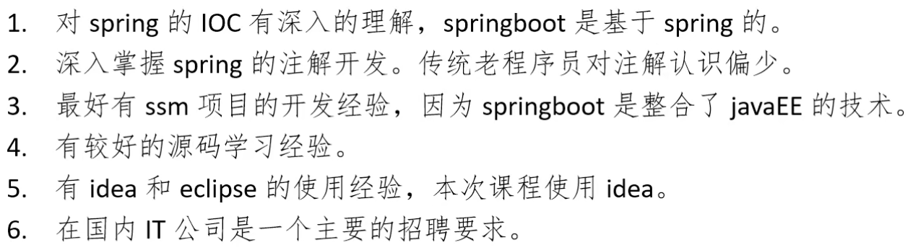

一、Spring Boot 简介
Spring boot 是所有基于Spring开发项目的起点。Spring boot 并不是一个新的框架，它默认配置了很多框架的使用方式，就像Maven整合了所有的jar包，spring boot 整合了很多的技术，提供了 javaEE的大整合。
1、1 SpringBoot的学习铺垫和要求

1、2 SpringBoot主要特性和好处
在微服务层面来说：springBoot是开发一个一个的项目（服务）的，springCould是管理微服务总的项目（集群：服务的注册监控和管理，负载均衡）。
1、SpringBoot Starter：将常用的依赖分组进行了整合，将其合并到一个依赖中，这样就可以一次性添加到项目的Maven或者Gradle构建中；
2、使编码变得简单，SpringBoot采用JavaConfig的方式对Spring进行配置，并且提供了大量的注解，极大地提高了工作效率；
3、自动配置：SpringBoot的自动配置特性利用了Spring对条件化配置的支持，并且提供了大量的注解，极大地提高了工作效率；
4、使部署变得简单，SpringBoot内置了三种Servlet容器，Tomcat，Jetty，undertow，只需要一个Java运行环境就可以运行SpringBoot的项目，SpringBoot的项目可以打成一个jar包；
5、现在流行微服务与分布式系统，springboot 就是一个非常好的微服务开发框架，可以使用它快速的搭建起一个系统。同时，也可以使用spring cloud（基于Spring boot 实现的云应用开发工具）来搭建一个分布式架构。
1、3 Spring boot 缺点
1、将现有或者传统的Spring Framework项目转换成为Spring boot 应用程序是一个非常困难和耗时的过程。它仅仅适用于全新的Spring项目；
2、使用简单，学习成本高，精通难。
二、环境准备
2、1 基础配置
JDK1.8：Spring Boot 推荐JDK1.8及以上；
maven3.x：Spring Boot推荐 3.3及以上版本；
IDEA；
Springboot 2.3.0.RELEASE
2、2 Maven 设置
1、配置阿里云镜像
配置位置：maven文件夹下的settings.xml
<mirror>
<id>nexus-aliyun</id>
<mirrorOf>central</mirrorOf>
<name>Nexus aliyun</name>
<url>http://maven.aliyun.com/nexus/content/groups/public</url>
</mirror>
2、给maven的settings.xml配置文件的profiles标签添加
<profile>
<id>jdk-1.8</id>
<activation>
<activeByDefault>true</activeByDefault>
<jdk>1.8</jdk>
</activation>
<properties>
<maven.compiler.source>1.8</maven.compiler.source>
<maven.compiler.target>1.8</maven.compiler.target>
<maven.compiler.compilerVersion>1.8</maven.compiler.compilerVersion>
</properties>
</profile>
2、3 IDEA配置
1、Project Settings-->project--->指定为JDK1.8
2、Settings--->搜索 maven-->设置maven安装位置和仓库位置
三、Spring Boot 第一个案例
3、1 创建一个maven 父工程 tx_sboot(pom)
3、 springboot打包
<!--springboot 打包插件-->
<build>
<plugins>
<plugin>
<groupId>org.springframework.boot</groupId>
<artifactId>spring-boot-maven-plugin</artifactId>
</plugin>
</plugins>
</build>
在控制台执行命令：
mvn -f 工程名 clean package，或者点击maven 的package按钮；
注意：springboot项目打包一定要配置springboot的打包插件，不加插件直接通过maven打包，运行jar包会报错： Projrct\SpringBoot\SpringBoot_first\target\SpringBoot_first-1.0-SNAPSHOT.jar中没有主清单属性
四、springboot系统构建分析
第一个案例做完之后的疑问：
1、starter是什么？如何去使用starter？
start就是一个jar，其中包含一组jar包，这些jar包包含了springboot某些模块的全部jar包。
自定义starter规范 ：命名：名称-spring-boot-starter，用来区分。
2、Tomcat的内嵌是如何完成的？
3、使用了web对应的starter，springmvc如何自动装配？
4、如何实现自定义的配置？
五、springboot默认扫描器规则
springboot 的主启动类所在的package就是扫描器的basepackage。
注意：springboot的主启动类必须放在包下，不能直接放在java目录下，因为java目录不是包目录，而springboot主启动类必须在包下（所在包为扫描器的basepackage）。
六、springboot热部署
springboot的热部署只是针对于开发，方便开发：在切换 idea窗口的时机部署；在以jar包方式启动时，建议排除热部署。
增加依赖：
<dependencies>
<dependency>
<groupId>org.springframework.boot</groupId> <artifactId>spring-boot-devtools</artifactId> <optional>true</optional>
</dependency>
</dependencies>

springboot热部署原理：
springboot有两个自定义类加载器，一个是base classloader，负责加载项目中不变的类（例如依赖中的类），另一个是restart classloader，用来加载用户代码。当使用热部署时，会监控用户代码（classpath路径下：target/classes），当需要重新部署时，原先的restart classloader会被丢弃，重新创建一个restart classloader加载用户的类，这样比手动重启（全部加载）速度快。
设置需要排除热部署的文件路径：
在spring boot 配置文件
spring.devtools.restart.exclude=static/**,public/**,config/**
SpringBoot热部署默认排除：/META-INT/maven,/META-INT/resources,/resources,/static/,public,/templates，这些目录默认排除热部署，但是会进行 live reload。